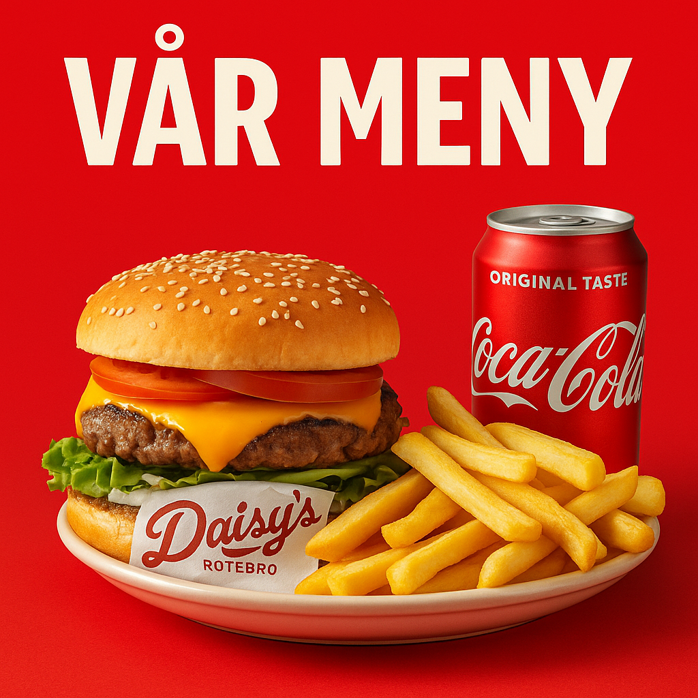
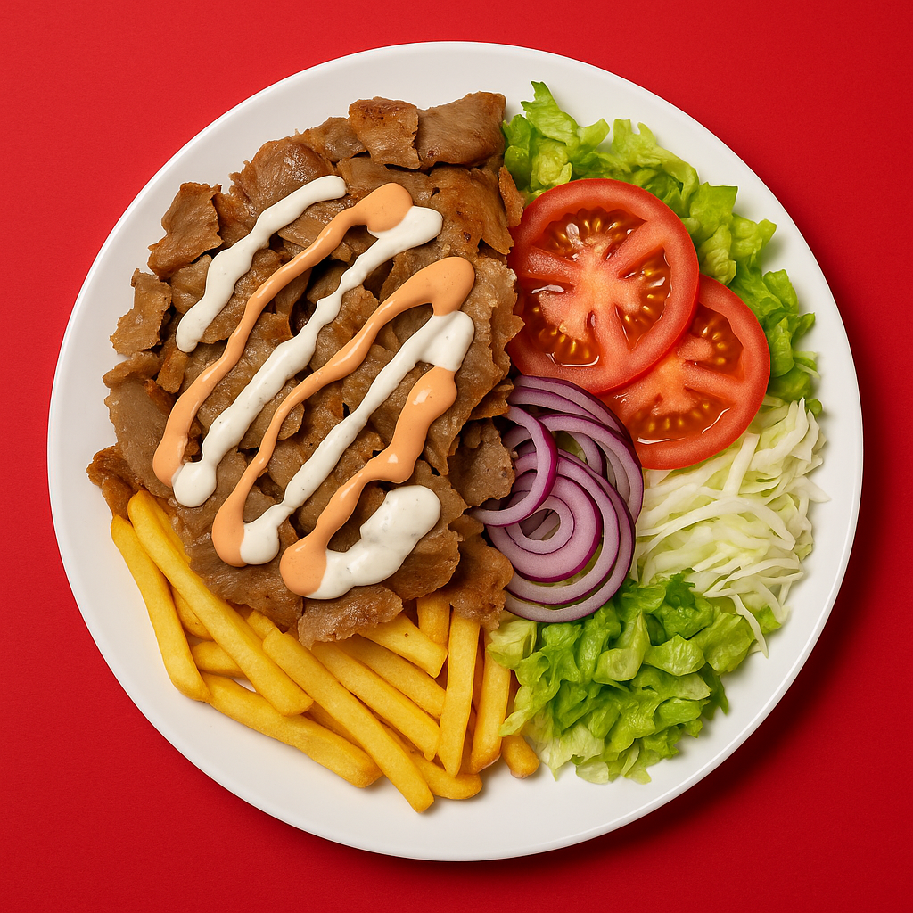

Vår Meny
Daisy’s Rotebro är stolt över att erbjuda en generös och smakrik hamburgermeny som passar både klassiska burgarälskare och dig som vill testa något extra – som en dubbel BBQ, blåmögelost eller en 5x smash-bomb!


- 🍔 Klassiker: HUSETS BURGER, MOZZARELLA BURGER och GARLIC BURGER – välj mellan 90g, 150g eller 200g.
- 🔥 Specialburgare: NEW YORKER, TEXAS MASSACRE och CHEF BURGER – med enkel eller dubbel kött och extra topping.
- 🌱 Vegetariskt: HALLOUMI BURGER och SOJABURGARE – lika goda som mättande.
- 💪 Extra Allt: DUBBEL CHEESE, XXXXXL BURGER (5x113g), BRONX DOUBLE SMASH – för den riktigt hungrige.
- 🌭 Övrigt: HOT DOG MEAL, SCHNITZEL, FISH'N'CHIPS och en populär barnmeny.
🍽️ Alla burgare serveras som måltid – alltid med krispiga strips och läsk!
- 🧀 Lägg till ost för endast 10 kr
- 🥤 Större läsk (PET 50cl) för 15 kr
- 🍟 Plusmeny med större strips + större läsk för 30 kr